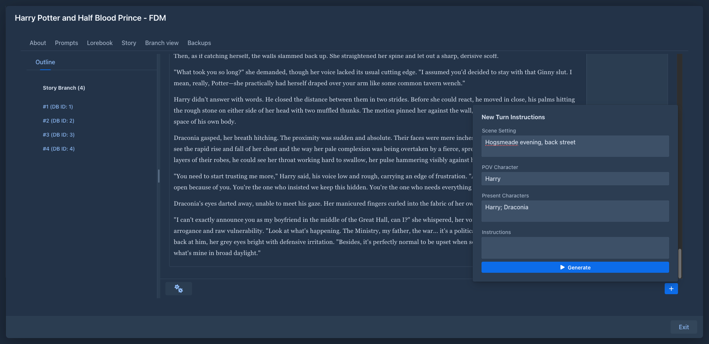

Marginalia
Marginalia is a self-hosted writing tool for long-form fiction co-written with large language models. You write the instructions for each part of the story, the model writes the prose, and Marginalia keeps everything around it in order: the branching story, the world lore, the summaries that keep long books within the model's context, and the prompt settings that shape the style.
It runs in your browser - as a desktop app on your own computer, or as a small server for you and your friends - and works with any OpenAI-compatible API: OpenAI, OpenRouter, LiteLLM, llama.cpp, LM Studio, Ollama, vLLM, and others.

Get started Download Source on GitHub
What it does
-
Books with branching stories – regenerate or swipe a part, branch from any point, move around the story tree, edit the generated text. See Books.
-
Lorebooks – world and character notes put into the prompt only when they matter: by book tags, text or regex filters, nested lorebooks. SillyTavern world info can be imported. See Lorebooks.
-
Templates and macros - prompts are Handlebars templates with SillyTavern-compatible macros, so imported lore keeps working. See Templates & macros.
-
Summaries – older parts are condensed so long books fit into the context window. See Summaries.
-
Any OpenAI-compatible model - including reasoning models, with per-model limits and switchable generation settings. See Inference providers and Protocols.
-
Backups - per-book backups with restore and copy, and full database backups on a schedule. See Book backups and Database backups.
-
Multiple users – each with their own books, lore, and models; administrators manage users, backups, and cleanup. See Administration.
-
Published books – a read-only reading view you can share. See Publishing & viewer.
-
Extensions - plugins add features at runtime: chapter markers, lorebook history, AI reviews, side questions to the model. See Extensions.
Which guide do you need?
Quick links
About
Marginalia is open source under the MIT License. Pictures used in the screenshots of this manual are credited on the Credits page. Releases are on GitHub; bugs and ideas go to the issue tracker.